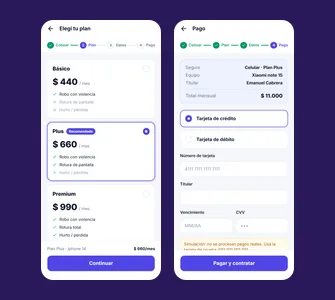

Cubrí Seguros: contratación digital de un seguro de celular
Un checkout de cuatro pasos (cotizar, elegir plan, cargar datos y pagar) implementado a partir del diseño de Figma de la cátedra.
- Rol
- Desarrollo front-end sobre un diseño provisto
- Contexto
- TP5 de Diseño UX-UI 2026 · FCyT-UADER
- Herramientas
- HTML5 · Tailwind CSS · Basecoat UI · JavaScript
- Equipo
- Proyecto individual

El problema
El trabajo práctico pide implementar el flujo de contratación de un seguro de celular a partir de un diseño en Figma: cotizar, elegir un plan, cargar los datos, pagar y recibir el número de póliza. Es un trámite con dinero y datos personales, así que no admite confusión: cada paso tiene que decir qué falta, explicar los errores y evitar que se pague dos veces.
Proceso
-
1 · Un único estado
Toda la información del flujo vive en un solo objeto, y la pantalla solo muestra lo que dice ese estado. Por eso “Volver” nunca pierde los datos cargados.
-
2 · Reglas de negocio y validaciones
La cuota se calcula con el valor del equipo, la tasa anual del plan y un factor de antigüedad. Cada validación es una función pura que devuelve el mensaje de error o nada.
-
3 · Casos de prueba
Probé las cuotas con valores concretos y el pago con tarjetas de prueba: una aprobada, una rechazada y cualquier otra de 16 dígitos.
Solución
Un solo flujo de pasos con el resumen siempre a la vista y tres decisiones pensadas para evitar errores.
- Botones
- Se habilitan con el paso válido y explican qué falta: “Falta completar: …”.
- Errores
- Aparecen al salir del campo; al avanzar, el foco va al primer campo inválido.
- Pago
- El botón pasa a “Procesando…” y se bloquea para evitar el doble pago.
Resultado
- pasos de contratación
- 4
- planes con cuota calculada
- 3
- bonus: progreso guardado y máscaras de input
- 2
Es un trabajo práctico: no hay métricas de uso real ni test con usuarios. El progreso se guarda sin el número de tarjeta, el vencimiento ni el CVV.
Aprendizajes
-
Una sola fuente de verdad
Una única función calcula la cuota, así el precio de las tarjetas y el del resumen no pueden diferir.
-
Explicar antes que bloquear
Un botón deshabilitado sin explicación frustra; decir qué falta le ahorra un intento a la persona.
-
Cuidar los datos sensibles
El almacenamiento del navegador no está protegido, por eso nunca guarda los datos de la tarjeta.